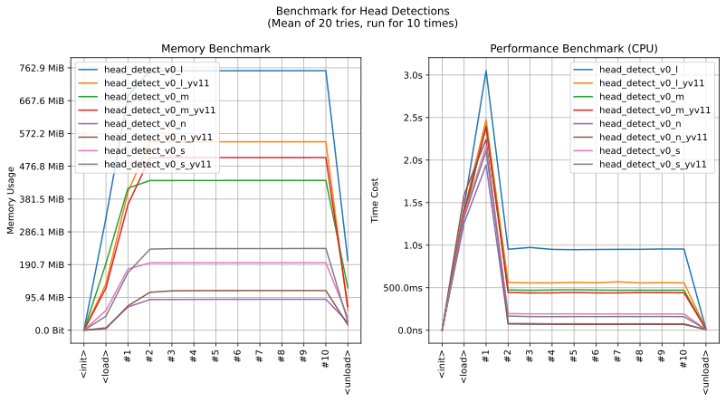

realutils.detect.head
- Overview:
Detect human heads in both real photo and anime images.
Trained with deepghs/anime_head_detection and open-sourced real photos datasets.

This is an overall benchmark of all the head detect models:
The models are hosted on huggingface - deepghs/real_head_detection.
detect_heads
- realutils.detect.head.detect_heads(image: str | PathLike | bytes | bytearray | BinaryIO | Image, model_name: str = 'head_detect_v0_s_yv11', conf_threshold: float = 0.2, iou_threshold: float = 0.7, **kwargs) List[Tuple[Tuple[int, int, int, int], str, float]][source]
Detect human heads in both real photo and anime images using YOLO models.
This function applies a pre-trained YOLO model to detect heads in the given anime image. It supports different model levels and versions, allowing users to balance between detection speed and accuracy.
- Parameters:
image (ImageTyping) – The input image for head detection. Can be various image types supported by ImageTyping.
model_name (str) – Optional custom model name. If provided, it overrides the auto-generated model name.
conf_threshold (float) – The confidence threshold for detections. Only detections with confidence scores above this threshold will be returned. Default is 0.2.
iou_threshold (float) – The Intersection over Union (IoU) threshold for non-maximum suppression. Detections with IoU above this threshold will be merged. Default is 0.7.
- Returns:
A list of detected heads. Each head is represented by a tuple containing: - Bounding box coordinates as (x0, y0, x1, y1) - The string ‘head’ (as this function only detects heads) - The confidence score of the detection
- Return type:
List[Tuple[Tuple[int, int, int, int], str, float]]
- Example:
>>> from realutils.detect import detect_heads >>> >>> detect_heads('yolo/solo.jpg') [((162, 47, 305, 210), 'head', 0.7701659202575684)] >>> detect_heads('yolo/2girls.jpg') [((683, 48, 1199, 754), 'head', 0.8410779237747192), ((105, 91, 570, 734), 'head', 0.8339194059371948)] >>> detect_heads('yolo/3+cosplay.jpg') [((329, 194, 426, 309), 'head', 0.8123012781143188), ((359, 20, 448, 122), 'head', 0.8047150373458862), ((185, 81, 265, 166), 'head', 0.7797152996063232)] >>> detect_heads('yolo/multiple.jpg') [((867, 259, 1084, 527), 'head', 0.8264595866203308), ((1364, 448, 1583, 724), 'head', 0.8254891633987427), ((480, 201, 781, 565), 'head', 0.8191508054733276), ((1189, 175, 1398, 412), 'head', 0.8097156286239624), ((1028, 671, 1277, 992), 'head', 0.8084591627120972)]
>>> from imgutils.detect import detection_visualize >>> from matplotlib import pyplot as plt >>> >>> image = 'yolo/solo.jpg' >>> result = detect_heads(image) >>> >>> # visualize it >>> plt.imshow(detection_visualize(image, result)) >>> plt.show()